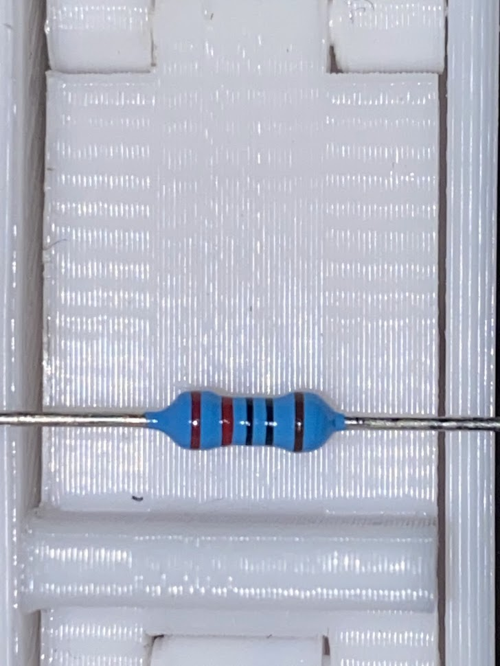
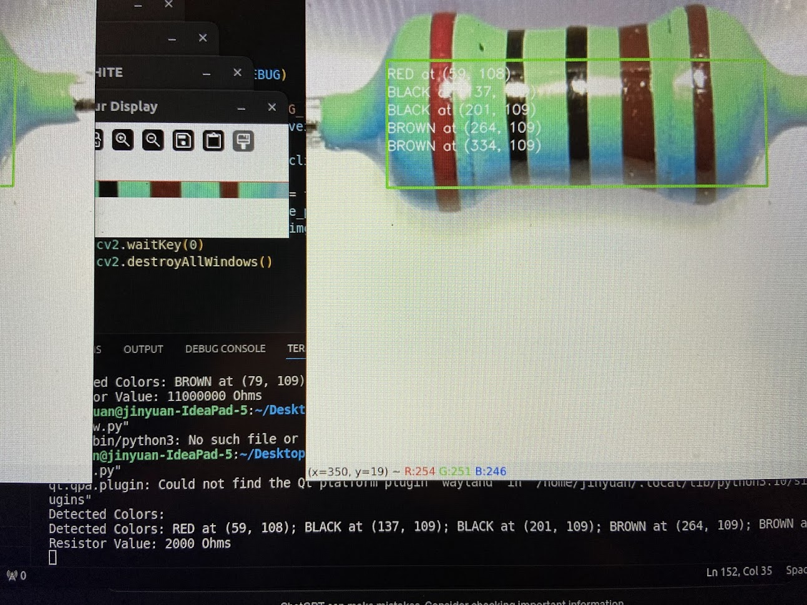
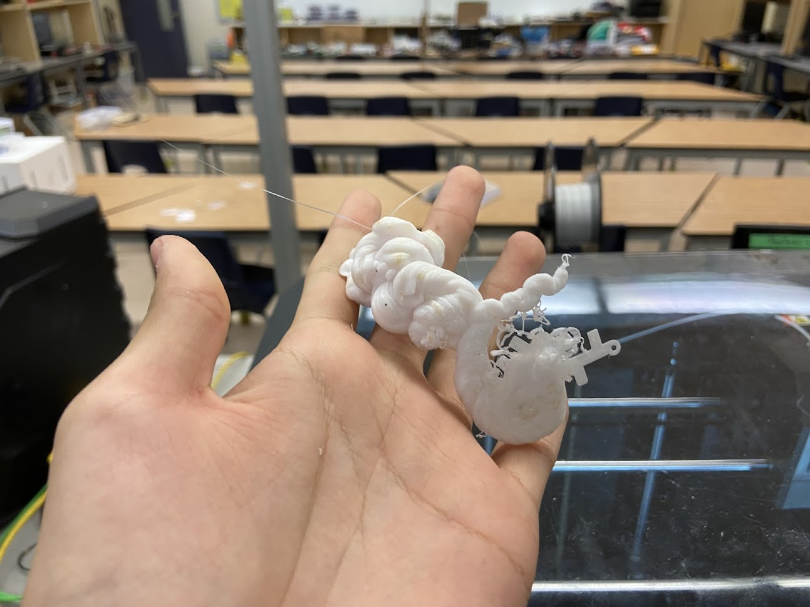

Apr 2024 - Jun 2024 / Python, OpenCV, Scikit-learn, Roboflow, Raspberry Pi
Automatic Resistor Sorter
A Grade 12 Computer Engineering robotics project for identifying resistors on a custom conveyor, reading color bands, calculating values, and sorting parts.
Role
My primary responsibilities were the computer vision software, machine learning model development for color-band identification, and the overall system integration logic. My teammates handled the mechanical design/fabrication and electromechanical actuation.
Vision and ML Approach
The hardest part was reliable resistor color detection. I started with traditional OpenCV and Haar Cascade experiments, including HSV masks, sliders, flood fill, and segmented debug windows. Those methods were too sensitive to lighting and reflective resistor bands.
I eventually pivoted to a machine-learning based approach: Roboflow for resistor localization, followed by custom preprocessing and a Scikit-learn KNN classifier for color-band classification. The KNN model performed far better than the earlier rule-based attempts on the image sources used in the project.
Integrated Workflow
- A button press triggered PiCamera2 image capture.
- The captured image was sent through object detection for resistor localization.
- The detected resistor region was cropped and preprocessed.
- Individual color bands were segmented and classified with the KNN model.
- The resistor value was calculated and displayed as an overlay.
- GPIO output controlled servo/solenoid hardware for sorting.
Selected Visuals



Outcomes
- Hands-on OpenCV experience for image preprocessing, masking, cropping, and debugging.
- Practical Scikit-learn experience on a real, messy classification problem.
- Hardware integration experience with Raspberry Pi camera capture and GPIO control.
- A clearer understanding of when rule-based vision becomes too brittle and ML is worth the pivot.